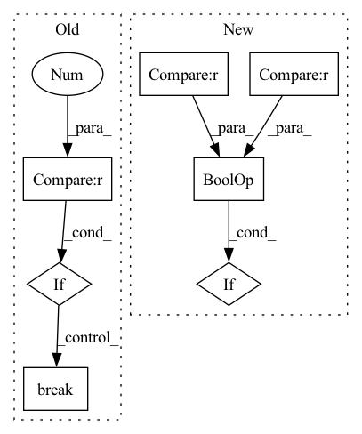

Pattern ID :13412

Before Change
lam, L, loss = self.progress_history()
if self._count_finish >= 3:
self.message = self.message + "success"
break
elif self.decision_history.count("accept") > 2 and self.decision_history[-1] == "accept" and L[-1] < 0.1 and ((loss[-2] - loss[-1])/loss[-1]) < (self.relative_tolerance/100):
self.message = self.message + "success"
break
elif self.L >= (1e9 - 1) and self._count_reject >= 12 and not self.take_low_rho_step():
After Change
else:
self.step_method0()
if self.save_steps is not None and self.decision_history[-1] == "accept":
self.model.save(os.path.join(self.save_steps, f"{self.model.name}_Iteration_{self.iteration:03d}.yaml"))
lam, L, loss = self.progress_history()
In pattern: SUPERPATTERN
Frequency: 3
Non-data size: 7
Instances
Fragment ID: 45179779
Project Name: connorstoneastro/autoprof
Commit Name: 54e22993021b3929388b6319d6501791a016bc39
Time: 2022-12-29
Author: connorstone628@gmail.com
File Name: autoprof/fit/lm.py
M Class Name: LM
N Class Name: LM
M Method Name: fit(1)
N Method Name: fit(1)
M Parent Class: BaseOptimizer
N Parent Class: BaseOptimizer
M File Name: autoprof/fit/lm.py
N File Name: autoprof/fit/lm.py
M Start Line: 457
M End Line: 495
N Start Line: 477
N End Line: 494
'>
Before Change
else:
if valid_loss >= self.prev_loss:
self.no_improvement += 1
if self.no_improvement >= 10:
print("Stop training")
break
else:
self.no_improvement = 0
self.prev_loss = valid_loss
After Change
self.train_loss[epoch] = train_loss
self.valid_loss[epoch] = valid_loss
if self.anneal_epoch is not None and epoch + 1 == self.anneal_epoch - 1:
// From the next epoch, learning rate is channged.
anneal_lr = self.anneal_lr
for param_group in self.optimizer.param_groups:
'>
Fragment ID: 45179780
Project Name: tky823/dnn-based_source_separation
Commit Name: 633db31aabb9b4ac689d84887b16f1b816ce1291
Time: 2021-08-08
Author: 40362510+tky823@users.noreply.github.com
File Name: egs/musdb18/d3net/src/adhoc_driver.py
M Class Name: AdhocTrainer
N Class Name: AdhocTrainer
M Method Name: run(1)
N Method Name: run(1)
M Parent Class: TrainerBase
N Parent Class: TrainerBase
M File Name: egs/musdb18/d3net/src/adhoc_driver.py
N File Name: egs/musdb18/d3net/src/adhoc_driver.py
M Start Line: 101
M End Line: 104
N Start Line: 84
N End Line: 102
'>
Before Change
lam, L, loss = self.progress_history()
if self._count_finish >= 3:
self.message = self.message + "success"
break
elif self.decision_history.count("accept") > 2 and self.decision_history[-1] == "accept" and L[-1] < 0.1 and ((loss[-2] - loss[-1])/loss[-1]) < (self.relative_tolerance/100):
self.message = self.message + "success"
break
elif self.L >= (1e9 - 1) and self._count_reject >= 12 and not self.take_low_rho_step():
After Change
else:
self.step_method0()
if self.save_steps is not None and self.decision_history[-1] == "accept":
self.model.save(os.path.join(self.save_steps, f"{self.model.name}_Iteration_{self.iteration:03d}.yaml"))
lam, L, loss = self.progress_history()
'>
Fragment ID: 45179783
Project Name: connorstoneastro/autoprof
Commit Name: 6cd267bc49a6a3c4f84c05f36540b6a20be36d20
Time: 2023-01-03
Author: connorstone628@gmail.com
File Name: build/lib/autoprof/fit/lm.py
M Class Name: LM
N Class Name: LM
M Method Name: fit(1)
N Method Name: fit(1)
M Parent Class: BaseOptimizer
N Parent Class: BaseOptimizer
M File Name: build/lib/autoprof/fit/lm.py
N File Name: build/lib/autoprof/fit/lm.py
M Start Line: 457
M End Line: 495
N Start Line: 478
N End Line: 495